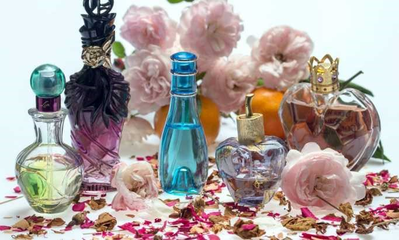

Vesti
U Parizu otvoren muzej posvećen parfemu
U Parizu je nedavno otvoren muzej posvećen istoriji parfema koji se pre 3.000
godina koristio kao ritual tokom sahrana, u Srednjem veku za zataškavanje neprijatnih mirisa, da
bi danas predstavljao zadovoljstvo, a za neke i luksuz.
Muzej je otvoren u privatnoj
zgradi, porodičnoj kući Fragonarovih, koji žive u Grasu na jugu Francuske kod Azurne obale.
Gras se smatra kolevkom obrade parfema, a 2018. godine ta lokacija je upisana u spisak
nematerijalne kulturne baštine Organizacije UN za obrazovanje, kulturu i nauku (UNESCO).
Posetioci muzeja će otkriti istoriju pravljenja parfema. Izloženo je 400 boca sa sastojcima
budućih parfema.
Takodje se nalaze razni predmeti u kojima se nekada držali parfemi,
kao što su metalne posude ili parfemisani sundjeri koji su se nalazi u nekim zgradama sa
verovanjem da će lepi mirisi odagnati epidemije i bolesti. Izložene su boce sa jakim mirisnim
sastojcima koje su nekada koristile dame kad se ne osećaju dobro ili padnu u nesvest zbog
zategnutih korseta. Počev od 18. veka parfemi više nemaju funkciju zataškavanja neprijatnih
mirisa ili "teranja bolesti" već postaju zadovoljstvo, a mirisne note suptilnije.
Uprava muzeja navela je da su parfemi sada lakši, vazdušastiji i skroz drugačiji od nekadašnjih
parfema koji su bili izuzetno teški. Ukusi za parfeme takodje variraju i od geografskih
područja. Francuzi vole toaletne vode, lake parfeme, većinom cvetne. Amerikanci vole opojne
parfeme, dok Japanke vole izuzetno blage note. Kinezi su za jake parfeme, kao i Rusi i na
Bliskom istoku.
Kako da prepoznate kopiju parfema?
Parfem je magija, on je prvo što primetiš i poslednje čega se setiš! Gotovo da
nema osobe na planeti koja ne uživa u čarima aromatičnih voda. Upotreba mirisa datira još iz
drevnih vremena.
Danas prodaja i proizvodnja parfema je jedan od najunosnijih poslova.
Ipak, kako tehnologija napreduje neretko se na tržištu pojave kopije poznatih parfema.
Zahvaljujući sumnjivim onlajn sajtovima i prodavnicama bez imena "fejk" mirisi često završe u
potrošačkoj korpi.
Pojedinci su se toliko izveštili da pune originalne bočice aromom
koja nije brendirana i na prvi pogled takve kopije parfema izgledaju kao originali. Neretko
ljudi izdvajaju za ovakve mirise značajne svote novca. Ljudi koji nemaju detektivski njuh mogu
da se vode smernicama koje mogu da pomognu da se razazna razlika između falsifikata i originala.
Znalci kažu da kopije mahom imaju izraženiji slatkastu aromu koju voli mlađa populacija, a ona
često ima manje istančano čulo mirisa.
Nepisano pravilo je da skuplji parfemi i
originali imaju veću postojanost. Takođe često imaju sposobnost da kroz nekoliko sati nakon
nanošenja menjaju tri ili četiri mirisne note. Kopije vrlo brzo izgube miris pa se dešava da
kada se naprskaju nakon nekoliko sati deluje kao da ništa nije stavljeno na kožu. Najbolji
plagijati u sebi takođe sadrže maksimalno dve note i vrlo brzo gube svoju čaroliju.
Sve što treba da znate o parfemima
Stručnjak za lepotu Lejton Deni, osnivač istoimenog brenda, otkriva "trikove" za
parfeme i najčešće greške koje pravimo nanoseći svoj omiljeni miris.
Parfemi
drugačije mirišu na različitim osobama. Svako od nas ima neki svoj, prirodan miris,
koji utiče na parfem. Taj prirodni miris nastaje kombinacijom gena, kože, ishrane, lekova koje
uzimamo, stresa, a verovatno je najvažniji faktor temperatura kože - objašnjava on. Lejton
ističe da neki ljudi imaju više pora po centimetru kože od drugih, a na miris utiče i to koliko
masti imaju. "Svi ti faktori utiču na toplotu kože, što utiče i na miris parfema".
Tip kože utiče na miris. "Prirodna ulja koja koža proizvodi se razlažu
i zadržavaju molekule mirisa. Zato, što vam je koža masnija, to je miris parfema jači i duže će
da traje. Ako imate suvu kožu, onda miris neće dugo da se oseća, i potrebno je da napravite neku
barijeru između kože i parfema, kako biste udvostručili trajnost mirisa". Ukoliko imate suvu
kožu, on savetuje da pre nanošenja parfema nanesete mleko za telo istog mirisa kao i parfem.
Antibiotici i ishrana utiču na miris. Ne postoji ništa što možete
oralno da unesete kako biste pojačali miris parfema, ali ako ste na ishrani koja podrazumeva
smanjen unos masti, koža će vam biti suvlja, pa će i miris kraće da se oseća - kaže Lejton. On
dodaje da i antibiotici mogu da promene miris kože jer utiču na bakterije na koži. "Neki lekovi
mogu da promene miris vašeg omiljenog parfema na koži. Ako se to desi, nemojte da bacate pafrem,
već sačekaje da lek izađe iz organizm, pa opet koristite omiljeni miris".
Kako
da parfem duže traje. "Ukoliko se miris parfema na koži kratko oseća, to nažalost
znači da 'hemikalije' vaše kože čine da miris parfema brže ispari. Parfimeri bi rekli da koža
odbacuje miris". Lejton savetuje da liznete kožu na ručnom zglobu, a ako ima jak, oštar ukus, to
je znak kiseline. "Što je koža kiselija, to će parfem kraće da se oseća". Kao što je ranije
napomenuo, premalo masti u ishrani, stres, začinjena i brza hrana mogu da utiču na temperaturu
kože i dovedu do "odbacivanja" mirisa. Rešenje je, kaže on, u tome da "slojevito" nanesete
miris, tj. da nanesete losion ili kremu istog mirisa kao i parfem, da bi se usporilo isparavanje
mirisa.
Klima utiče na miris. Kada je napolju vruće, miris parfema
kraće traje jer brže isparava sa kože. "Odgovor na letnje visoke temperature je korišćenje
parfema 'lakšeg' mirisa, koji ćete češće iznova prskati". Takođe, Lejton savetuje da ne trljate
zglob o zglob nakon nanošenja parfema, jer ćete tako "smrviti" miris, već jednostavno
naprskajte. Najbolja mesta za nanošenje parfema su kaže, iza ušiju, sa unutrašnje strane lakta,
na zadnjoj strani kolena, na vratu i unutrašnjoj strani zglobova. Još neka od dobrih mesta su
dekolte, ramena i zadnja strana vrata, blizu linije kose. Kada nanosite parfem, naprskajte sa
udaljenosti od oko 20 centimetara od kože. Time ćete "zahvatiti" veću površinu kože, pa će se i
miris duže osećati.
Neki parfemi mogu da traju i do deset godina.
Bočice parfema obično traju između 12 i 35 meseci, u zavisnosti od tipa mirisa,
sastojaka i načina skladištenja. Bilo koji parfem koji se čuva izvan kutije, na mestu gde je
izložen sunčevoj svetlosti, neće trajati duže od nekoliko meseci - tvrdi ovaj stručnjak. Sa
druge strane, ako parfem čuvate na hladnijem i mračnom mestu, ako su sastojci kvalitetni, može
da traje i do deset godina. "Čuvajte parfem dalje od sunčeve svetlosti i negde gde temperatura
nije promenljiva. Ako je miris izložen čestim temperaturnim promenama, bočica će početi da
kondenzuje i parfem će brzo izgubiti miris".
Miris zvani opsesija

Kaže se da parfem ima moć da probudi najdublja sećanja. Pojedini kultni mirisi ne
mogu da iščeznu, a njihova prodaja ne jenjava po nekoliko decenija.
Ikona zavodljive
arome je miris šanel 5. Nosi titulu najprodavanijeg svih vremena. Po urbanoj legendi, dobio je
ime tako što je slavna Koko Šanel, kada joj je parfemdžija doneo uzorke mirisa rekla da želi
peti po redu, a ostalo je istorija. Modne kuće koje su uplele prste u parfemsku industriju
spoznale su da mogu da zarade ako s vremena na vreme naprave limitirano izdanje kultnih parfema.
Tako je kuća Šanel svojevremeno predstavila i limitirano izdanje poznate petice koju je
upakovala u rubincrvenu bočicu. Dame koje vole šanel 5 odmah su pohrlile u parfimerije, i on je
planuo sa rafova.
Jedan od popularnijih je i Dolče Gabana Light Blue. Ugledao svetlost
dana davne 2001. godine i danas nakon 18 godina je veoma tražen. Sada je modna kuća D&G
obradovala dame limitiranom aromom Light Blue note u novom ruhu. Miris Dolče Gabana Light Blue -
Sun upakovan je u identičnu bočicu koja ovog puta nema nebeskoplavi poklopac, već ima
belo-zlatne detalje kako bi odgovarao nazivu (sunce).
Kada je miris Candy (bombona)
Prada prikazan svetu izazvao je bujicu oprečnih mišljenja. Svi su bili očarani parfemom sa
neobičnom bočicom u obliku pečurke. Pojedine žene su ga kovale u zvezde, a neke su ga kudile na
sva zvona. Ipak, po svemu sudeći mnogo je više onih koji se zaklinju u ovu aromu. Ljubiteljke
Prade sada na rafovima u parfimerijama imaju ovu notu, ali u novom obliku. Aroma Prada Canddž
Night (noćna bombona) je upakovana u prepoznatljivu roze bočicu koja u skladu sa imenom ima
noćne tj. teget nijanse. Za bočicu od 80 ml mora da se izdvoji 124 dolara.